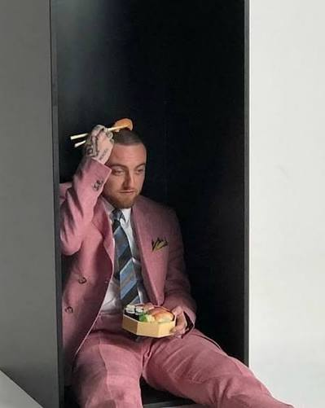

Release: January 17, 2025 (Posthumous Album)
Label: Warner Bros. Records
Recording Era: Recorded primarily in 2014 around the same dark, experimental studio period as Watching Movies with the Sound Off and Faces.

For a full decade, Balloonerism was the holy grail of Mac's unreleased vault. Circulating as low-quality bootlegs and internet rumors among hardcore fans since around 2014, its existence was finally confirmed when his estate officially sanctioned its release in early 2025.
The official rollout began in November 2024 when an unannounced animated trailer featuring audio from the track "DJ's Chord Organ (feat. SZA)" played on the festival screens between sets by Sampha and The Alchemist at Tyler, The Creator's Camp Flog Gnaw Carnival.
The project heavily features his alter ego, Delusional Thomas. Mac created this high-pitched persona as a outlet to express darker, raw thoughts on addiction and mortality without filter.